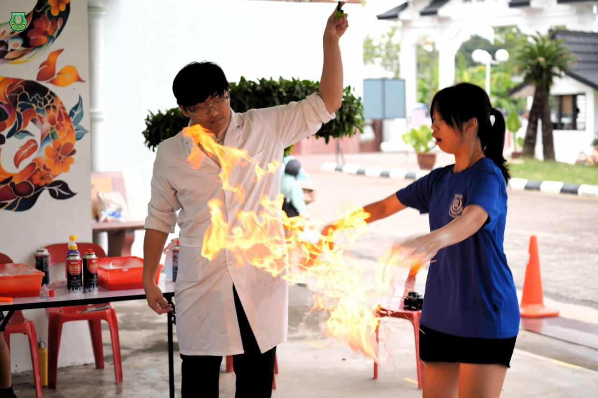
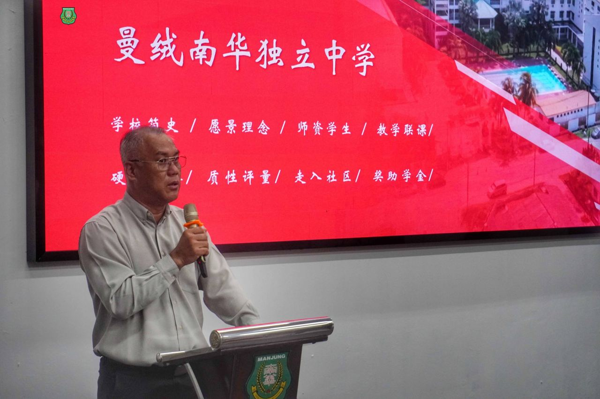
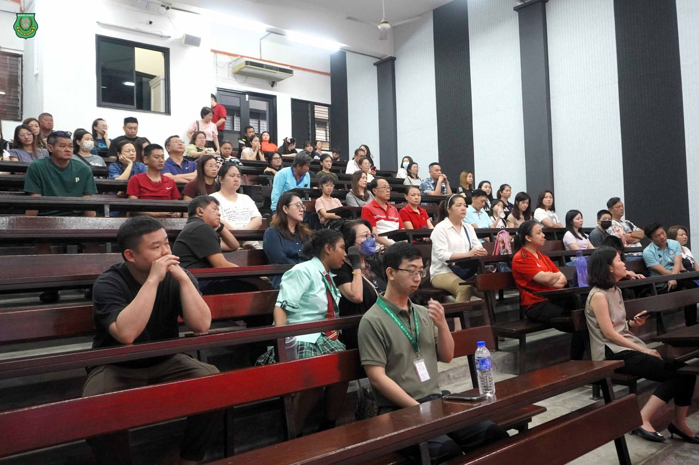
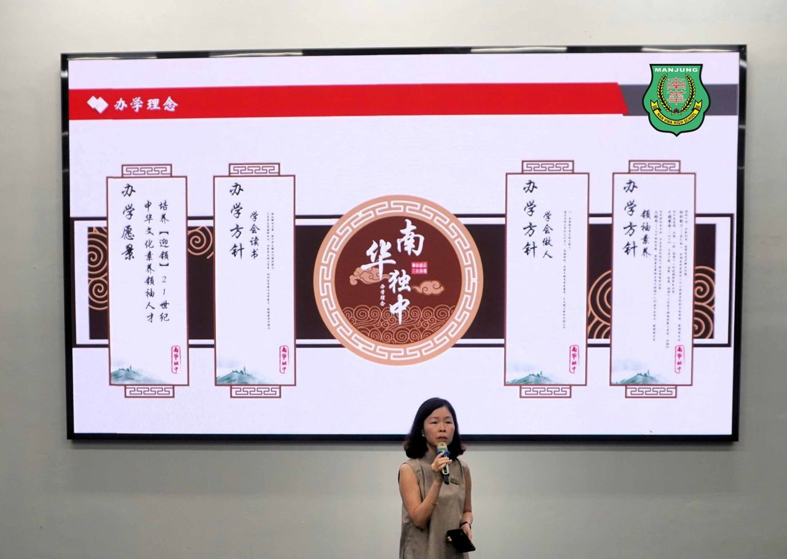
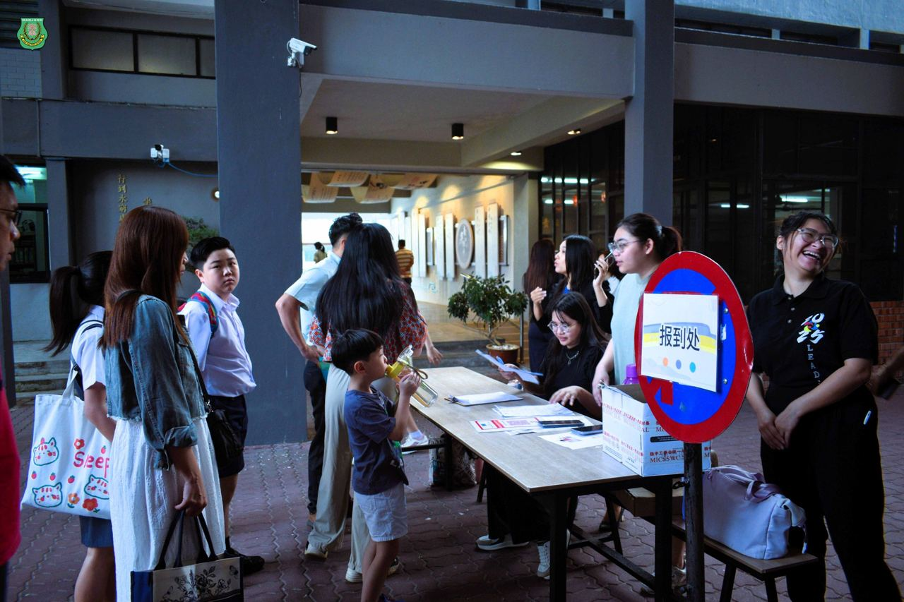
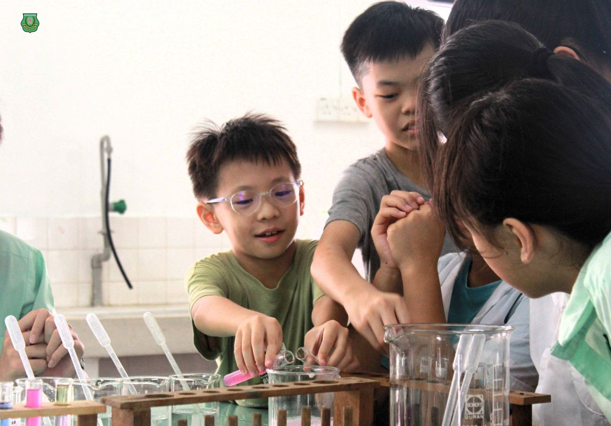
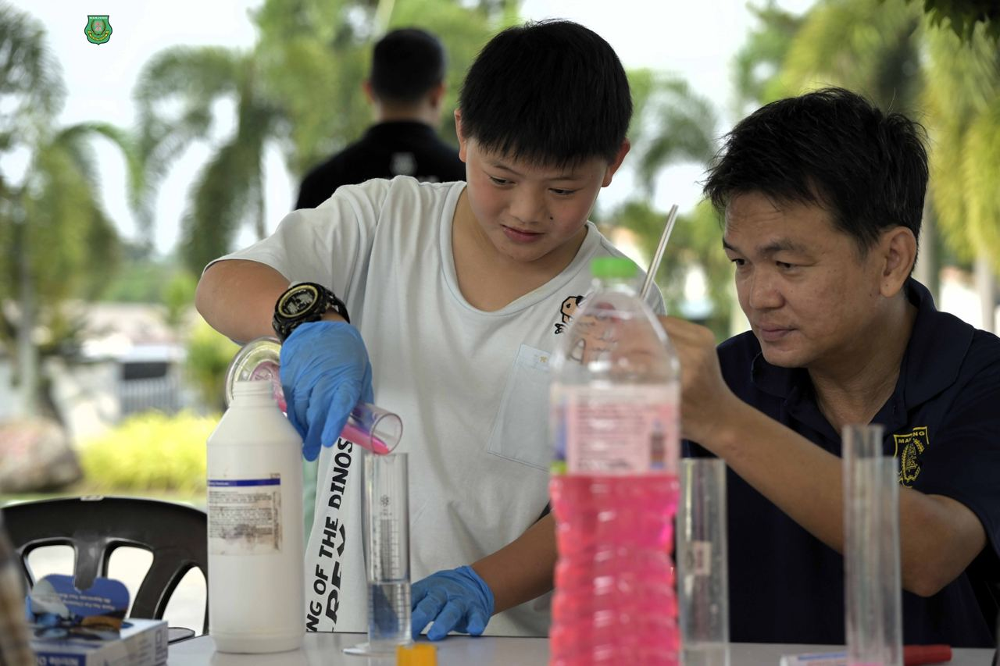

南华独中校园开放日
南华独中校园开放日
科学与科技、摄影与美学展成果丰硕
引领教育新篇章
霹雳曼绒南华独立中学于近日举办“#2025年校园开放暨科学与科技展”，同时配合“#美术与摄影展”，吸引了区内小学生、家长及公众踊跃出席。
本次活动除了展示学生在科学、科技、美术及摄影等领域的学习成果外，也设有多元化的 #校本体验课 与 #高中选修课程 体验课，让来宾能够亲身感受南华独中在教育改革下的丰硕成果。
课程说明会：#坚守办学愿景
开放日当天首先以座无虚席的“课程说明会”拉开序幕，出席的家长及来宾济济一堂，专注聆听董事总务何添胜先生及校长陈丽冰博士说明与介绍。
董事总务何添胜先生指出，董事会始终坚持“培养‘迎领’21世纪中华文化素养领袖人才”的愿景，并强调董事会将全力支持与配合校长的施政方针，达成共识、坚守使命，为学生提供舒适的教育场域，更重要的是让每一位学生都能接受到最优质的教育。
校长陈丽冰博士则在说明中强调，推动教育改革是学校义不容辞的责任，目标是发掘每一位学生的天赋与热忱。陈校长不但展示了近年来学校在校本课程、高中选修课程、高中课程分流、联课活动、学生领袖素养及社会责任行动计划等方面的成果。陈校长 诚意邀请家长在说明会后亲自参观各项展区，见证孩子们的学习成果，真正理解“教改”不再是空谈口号，而是已经落实于校园日常。
教改2.0成果展：#科学与科技触手可及
此次展览主题为“科学与科技”，是“教改2.0”阶段性的成果验收。展览特别强调科学与科技并非冰冷的知识，而是贴近生活、解决问题的能力。科学展区的实验涵盖水火箭、火焰掌、消失的颜色、花青素魔法及大象牙膏等趣味科学。科技展区则展出Robotic、AI象棋机器人、无人机等作品，以及十分受欢迎的AI趣味馆：
AI-Cosplay：即时生成动漫角色造型与配音；
AI游戏城堡：利用基础Vibe-coding打造小游戏；
AI象棋：与AI进行象棋对弈；
AI占卜算命：以生成式AI为生活疑问提供“占卜”指引；
相信AI情：生成诗句并打印成签；
和AI近人：创作歌词、编曲并演唱。
校本与选修课程体验：#多元化发展启蒙兴趣
除了科学与科技展，校方也开放音乐展、木工手艺展、美术成果展、体育展等校本课程体验区。高中选修课程则设有美容、化妆、美甲、花艺、咖啡与甜点艺术、书刻画、丙烯画、小厨师、中医学、大众传播等体验课。
此外，拉曼大学医院团队也在现场提供免费健康监测服务，突显校方与高等学府和社区之间的紧密联系。
未来展望： #走在推动教改的征途上
开放日当天，小六新生也同步进行入学考试，科目涵盖华文、马来文、数学及英文，并于校园导览及午餐后圆满结束。南华独中自2024年推行“教改2.0”，如今已迎来阶段性验收，然后这也仅仅是走在推动教育改革征途上踏出的一小步。校方希望通过此次开放日，让家长与社会大众更深入了解学校的课程设置初衷与办学愿景，同时见证学生在学术与素养并进上的成长。






